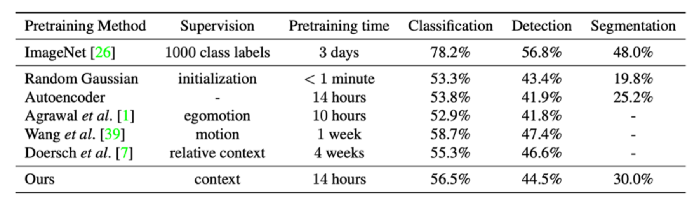
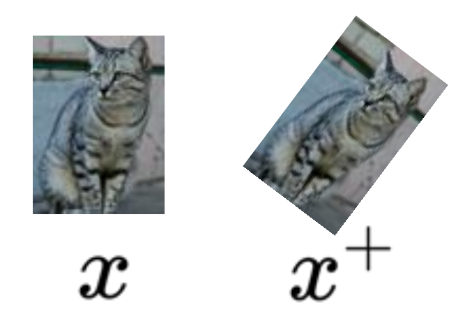
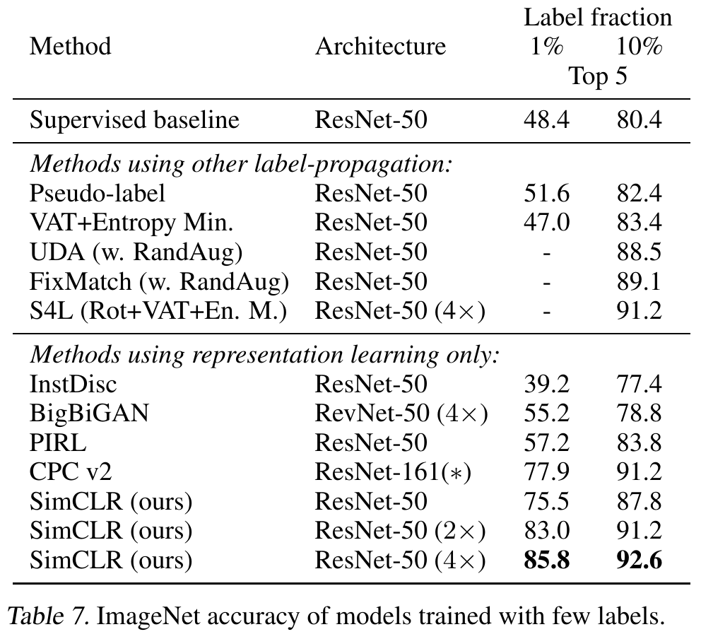
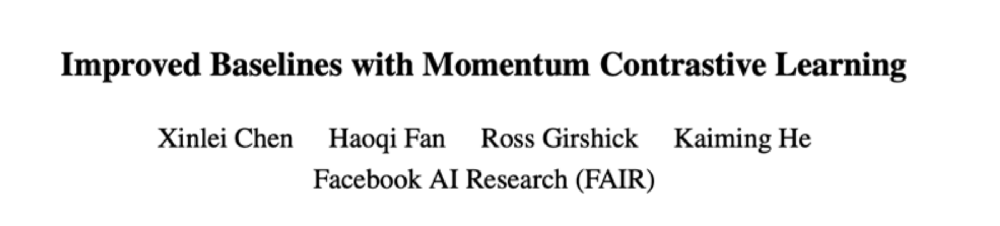
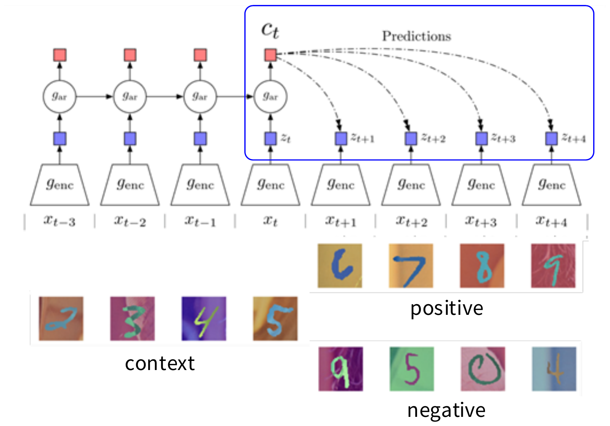

Pairs of an image x and a category y that people wrote. Example: ImageNet, 1,281,167 training images in 1,000 categories.
Learning objective
Give the correct category y a high probability p(y | x): minimise the cross-entropy loss, −log p(y | x).
Cat photo: Stanford CS231n (2026), Lecture 12, p. 6, where the image is marked “CC0 public domain”. The scores 0.9 and 0.1 are an illustration.
A · Self-Supervised Learning
Representations: Meaning of Images
Slide from Stanford CS231n (2026), Lecture 12, p. 9. (p. 8 shows the same figure under the title “Last Week: Visualizing and Understanding”.) Figure: Krizhevsky et al. (2012).
A · Self-Supervised Learning
Learned Representations
What is the problem with large-scale training?
- We need a lot of labeled data
Is there a way we can train neural networks without the need for huge manually labeled datasets?
Slide from Stanford CS231n (2026), Lecture 12, p. 10. Figure: Krizhevsky et al. (2012); the deck adds “Figures reproduced with permission”.
A · Self-Supervised Learning
Self-Supervised Learning
1. Pretext Task
Define a task based on the data itself
No manual annotation
Could be considered an unsupervised task;
but we learn with supervised learning objectives, e.g., classification or regression.
2. Downstream Task
The application you care about
You do not have large datasets
The dataset is labeled
Slide from Stanford CS231n (2026), Lecture 12, p. 11.
A · Self-Supervised Learning
Self-Supervised Learning – Pretext Task
Slide from Stanford CS231n (2026), Lecture 12, p. 12.
Guide your model to understand visual semantics (representations of meanings)
Define targets by image transformation
Predict rotations
Predict relative patch locations
Solve jigsaw puzzles
Predict missing pixels (inpainting)
Image coloring
Reconstruction-based learning (MAE)
A · Pretext tasks from image transformations
Pretext task: predict rotations
Hypothesis: a model could recognize the correct rotation of an object only if it has the “visual commonsense” of what the object should look like unperturbed.
Slide from Stanford CS231n (2026), Lecture 12, p. 21. Figure: Gidaris et al. (2018).
A · Pretext tasks from image transformations
Pretext task: predict rotations
Self-supervised learning by rotating the entire input images.
The model learns to predict which rotation is applied (4-way classification)
Slide from Stanford CS231n (2026), Lecture 12, pp. 22–23. One animation; its final state. Figure: Gidaris et al. (2018).
A · Pretext tasks from image transformations
Evaluation on semi-supervised learning
Self-supervised learning on CIFAR10 (entire training set).
Freeze conv1 + conv2 Learn conv3 + linear layers with subset of labeled CIFAR10 data (classification).
Slide from Stanford CS231n (2026), Lecture 12, p. 24. Figure: Gidaris et al. (2018).
A · Pretext tasks from image transformations
Transfer learned features to supervised learning
Full supervised learning
No pretraining
Self-supervised learning on ImageNet (entire training set [1,281,167 images]) with AlexNet.
Finetune on labeled data from Pascal VOC 2007 [trainval: 5,011 images].
Slide from Stanford CS231n (2026), Lecture 12, p. 25. Figure: Gidaris et al. (2018). Image counts in brackets (added): ILSVRC 2012 training set, image-net.org; VOC 2007 trainval, Ultralytics VOC dataset page. Retrieved 3 Nov 2026.
A · Pretext tasks from image transformations
Visualize learned visual attentions
Self-supervised learned attention has better interpretation.
A · Pretext tasks from image transformations
Pretext task: predict relative patch locations
Slide from Stanford CS231n (2026), Lecture 12, p. 27. Figure: Doersch et al. (2015).
A · Pretext tasks from image transformations
Pretext task: solving “jigsaw puzzles”
The model predicts the arrangement of the shuffled tiles (the index of the permutation -- learn the relation of patches in the image), not the object category.
Slide from Stanford CS231n (2026), Lecture 12, p. 28. Figure: Noroozi & Favaro (2016), Fig. 3
A · Pretext tasks from image transformations
Pretext task: predict missing pixels (inpainting)
Context Encoders: Feature Learning by Inpainting (Pathak et al., 2016)
Slide from Stanford CS231n (2026), Lecture 12, p. 30. Figure: Pathak et al. (2016).
A · Pretext tasks from image transformations
Learning to inpaint by reconstruction
Auto Encoder
Learning to reconstruct the missing pixels
Slide from Stanford CS231n (2026), Lecture 12, p. 31. Figure: Pathak et al. (2016).
A · Pretext tasks from image transformations
Inpainting evaluation
Slide from Stanford CS231n (2026), Lecture 12, p. 32. Figure: Pathak et al. (2016).
A · Pretext tasks from image transformations
Learning to inpaint by reconstruction
(We will talk about adversarial learning in the next lecture)
Added: \(x\) is the input image. \(F_\theta\) maps the image with a hole, \((1 - M) * x\), to a full image: image → image. It is the network that we train.
Added: \(D\) is a second network, the discriminator. It takes an image and outputs the probability that the image is real, not inpainted.
Adversarial loss between “real” images and inpainted images
Slide from Stanford CS231n (2026), Lecture 12, p. 33. Source: Pathak et al. (2016). The two blue notes on \(F_\theta\) and \(D\) are added.
A · Pretext tasks from image transformations
Inpainting evaluation
Slide from Stanford CS231n (2026), Lecture 12, p. 34. Figure: Pathak et al. (2016).
A · Pretext tasks from image transformations
Transfer learned features to supervised learning

Self-supervised learning on ImageNet training set, transfer to classification (Pascal VOC 2007), detection (Pascal VOC 2007), and semantic segmentation (Pascal VOC 2012)
Slide from Stanford CS231n (2026), Lecture 12, p. 35. Table: Pathak et al. (2016).
A · Pretext tasks from image transformations
Pretext task: image coloring
Slide from Stanford CS231n (2026), Lecture 12, p. 36. The deck credits “Richard Zhang / Phillip Isola”. See Zhang et al. (2016).
A · Pretext tasks from image transformations
Pretext task: image coloring
Slide from Stanford CS231n (2026), Lecture 12, p. 37. The deck credits “Richard Zhang / Phillip Isola”. See Zhang et al. (2016).
A · Pretext tasks from image transformations
Learning features from colorization: Split-brain Autoencoder
F1 sees only the grayscale channel and predicts the colour channels. F2 sees only the colour channels and predicts the grayscale channel. Each network predicts what the other one sees.
Slide from Stanford CS231n (2026), Lecture 12, p. 38. The deck credits “Richard Zhang / Phillip Isola”. Figure: Zhang et al. (2017). The caption under the figure is added.
A · Pretext tasks from image transformations
Learning features from colorization: Split-brain Autoencoder
Idea: cross-channel predictions
Slide from Stanford CS231n (2026), Lecture 12, p. 39. The deck credits “Richard Zhang / Phillip Isola”. Figure: Zhang et al. (2017).
A · Pretext tasks from image transformations
Transfer learned features to supervised learning
Self-supervised learning on ImageNet (entire training set).
Similar to the original ViT, divide the input into non-overlapping patches.
Uniformly sample a very largeproportion (75%) of these patches and mask them
Masking a high ratio makes predicting the task challenging and meaningful.
Also, not using mask tokens and picking a high sampling ratio (masking most of the image, e.g., 75%, and sampling a small visible portion, e.g., 25%, to feed into the encoder) enables the encoder to be very large.
The encoder only operates on unmasked patches (25%)
Embeds the patches by linear projection and add positional embeddings
Uses transformer blocks
Figure 6. MAE architecture from the paper
Since the input patches are a small part of the input, the encoder is chosen to be very large. (encoder has over 9 times computations per token vs decoder)
Merges the encoder outputs with the shared mask tokens in previously masked places, adding positional encodings to them.
Uses transformer blocks, followed by a linear projection for finalizing pixel reconstruction.
Figure 6. MAE architecture from the paper
Is solely responsible for reconstruction, meaning it is not used post-training. Hence, it is independent of the encoder design, making it flexible (unlike traditional AEs or UNet). This is an asymmetrical autoencoder design.
In linear probing, the pre-trained model is fixed, and only one linear layer is added at the end, to predict the labels (or produce the output). This method is used to assess the quality of representations from a pre-trained feature extraction model.
In fine-tuning, pre-trained model is further trained (not fixed), and one or more layers, possibly with non-linearities are added.
linear probing: provides a measure of representation quality of a pre-training in restricted conditions
fine-tuning: exploits models near-true potential to adopt for new tasks
Pretext tasks focus on “visual common sense”, e.g., predict rotations, inpainting, rearrangement, and colorization.
The models are forced learn good features about natural images, e.g., semantic representation of an object category, in order to solve the pretext tasks.
We often do not care about the performance of these pretext tasks, but rather how useful the learned features are for downstream tasks (classification, detection, segmentation).
Problems: 1) coming up with individual pretext tasks is tedious, and 2) the learned representations may not be general.
Slide from Stanford CS231n (2026), Lecture 12, pp. 57–58. One animation; its final state.
Part A · How learning gets rid of labels
Contrastive representation learning
1Self-Supervised Learning
2Pretext tasks from image transformations
3Contrastive representation learning
A · Contrastive representation learning
Pretext tasks from image transformations
Learned representations may be tied to a specific pretext task!
Can we come up with a more general pretext task?
Slide from Stanford CS231n (2026), Lecture 12, p. 59.
A · Contrastive representation learning
A more general pretext task?
Slide from Stanford CS231n (2026), Lecture 12, pp. 60–61. One animation; its final state.
A · Contrastive representation learning
Contrastive Representation Learning
Slide from Stanford CS231n (2026), Lecture 12, pp. 62, 64. Page 64 repeats page 62 after the deck’s agenda page.
Part A
Part A: key methods and insights
A pretext task makes the label from the data itself, with no manual annotation. We keep the learned features for a downstream task.
Given a chosen score function, we aim to learn an encoder function f that yields high score for positive pairs (x, x+) and low scores for negative pairs (x, x-).
Slide from Stanford CS231n (2026), Lecture 12, p. 66.
B · Intuition and formulation
A formulation of contrastive learning
Loss function given 1 positive sample and N - 1 negative samples:
\[ L = -\mathbb{E}_X\left[\log\frac{\textcolor{#3b7d3b}{\exp(s(f(x), f(x^+))}}{\textcolor{#3b7d3b}{\exp(s(f(x), f(x^+))} + \textcolor{#b23b2e}{\sum_{j=1}^{N-1}\exp(s(f(x), f(x_j^-))}}\right] \]
score for the positive pairscore for the N-1 negative pairs
This seems familiar …
Cross entropy loss for a N-way softmax classifier!
I.e., learn to find the positive sample from the N samples

Slide from Stanford CS231n (2026), Lecture 12, pp. 67–70 (one build, final state). Photos cropped from p. 68.
B · Intuition and formulation
A formulation of contrastive learning
Loss function given 1 positive sample and N - 1 negative samples:
\[ L = -\mathbb{E}_X\left[\log\frac{\exp(s(f(x), f(x^+))}{\exp(s(f(x), f(x^+)) + \sum_{j=1}^{N-1}\exp(s(f(x), f(x_j^-))}\right] \]
Slide from Stanford CS231n (2026), Lecture 12, p. 71.
Part B · Contrastive representation learning
Instance contrastive learning: SimCLR and MOCO
1Intuition and formulation
2Instance contrastive learning: SimCLR and MOCO
3Sequence contrastive learning: CPC
4Self-Distillation Without Labels, DINO
B · Instance contrastive learning: SimCLR and MOCO
SimCLR: A Simple Framework for Contrastive Learning
Cosine similarity as the score function:
\[ s(u, v) = \frac{u^T v}{||u||\,||v||} \]
Use a projection network g(·) to project features to a space where contrastive learning is applied
Generate positive samples through data augmentation:
random cropping, random color distortion, and random blur.
Slide from Stanford CS231n (2026), Lecture 12, p. 72. Source: Chen et al., 2020. Figure: Chen et al. (2020), Fig. 2.
B · Instance contrastive learning: SimCLR and MOCO
SimCLR: generating positive samples from data augmentation
Slide from Stanford CS231n (2026), Lecture 12, p. 73. Source: Chen et al., 2020. Figure: Chen et al. (2020), Fig. 4 (photo: CC BY, Von.grzanka).
B · Instance contrastive learning: SimCLR and MOCO
SimCLR
Generate a positive pair by sampling data augmentation functions
Iterate through and use each of the 2N sample as reference, compute average loss
InfoNCE loss: Use all non-positive samples in the batch as x-
Slide from Stanford CS231n (2026), Lecture 12, pp. 74–76 (one build, final state). Source: Chen et al., 2020. Figure: Algorithm 1.
B · Instance contrastive learning: SimCLR and MOCO
Training linear classifier on SimCLR features
Train feature encoder on ImageNet (entire training set) using SimCLR.
Freeze feature encoder, train a linear classifier on top with labeled data.
Slide from Stanford CS231n (2026), Lecture 12, p. 77. Source: Chen et al., 2020. Figure: Chen et al. (2020), Fig. 1.
B · Instance contrastive learning: SimCLR and MOCO
Semi-supervised learning on SimCLR features

Train feature encoder on ImageNet (entire training set) using SimCLR.
Finetune the encoder with 1% / 10% of labeled data on ImageNet.
Slide from Stanford CS231n (2026), Lecture 12, p. 78. Source: Chen et al., 2020. Table: Chen et al. (2020), Table 7.
B · Instance contrastive learning: SimCLR and MOCO
SimCLR design choices: projection head
Linear / non-linear projection heads improve representation learning.
A possible explanation:
contrastive learning objective may discard useful information for downstream tasks
representation space z is trained to be invariant to data transformation.
by leveraging the projection head g(·), more information can be preserved in the h representation space
Slide from Stanford CS231n (2026), Lecture 12, p. 79. Source: Chen et al., 2020. Figures: Chen et al. (2020), Figs. 8 and 2.
B · Instance contrastive learning: SimCLR and MOCO
SimCLR design choices: large batch size
Large training batch size is crucial for SimCLR!
Large batch size causes large memory footprint during backpropagation: requires distributed training on TPUs (ImageNet experiments)
\[ MI[f(x), f(x^+)] - \log(N) \geq -L \]
Slide from Stanford CS231n (2026), Lecture 12, p. 80. Source: Chen et al., 2020. Figure: Chen et al. (2020), Fig. 9.
B · Instance contrastive learning: SimCLR and MOCO
Momentum Contrastive Learning (MoCo)
Key differences to SimCLR:
Keep a running queue of keys (negative samples).
Compute gradients and update the encoder only through the queries.
Decouple min-batch size with the number of keys: can support a large number of negative samples.
The key encoder is slowly progressing through the momentum update rules:
\[\theta_k \leftarrow m\theta_k + (1 - m)\theta_q\]
Slide from Stanford CS231n (2026), Lecture 12, pp. 81–82. One animation; its final state. Math retyped. Figure: He et al. (2020), Fig. 1.
B · Instance contrastive learning: SimCLR and MOCO
MoCo
Generate a positive pair by sampling data augmentation functions
No gradient through the key
Update the FIFO negative sample queue
# f_q, f_k: encoder networks for query and key# queue: dictionary as a queue of K keys (CxK)# m: momentum# t: temperaturef_k.params = f_q.params # initializefor x in loader: # load a minibatch x with N samples x_q = aug(x) # a randomly augmented version x_k = aug(x) # another randomly augmented version q = f_q.forward(x_q) # queries: NxC k = f_k.forward(x_k) # keys: NxC k = k.detach() # no gradient to keys # positive logits: Nx1 l_pos = bmm(q.view(N,1,C), k.view(N,C,1)) # negative logits: NxK l_neg = mm(q.view(N,C), queue.view(C,K)) # logits: Nx(1+K) logits = cat([l_pos, l_neg], dim=1) # contrastive loss, Eqn.(1) labels = zeros(N) # positives are the 0-th loss = CrossEntropyLoss(logits/t, labels) # SGD update: query network loss.backward() update(f_q.params) # momentum update: key network f_k.params = m*f_k.params+(1-m)*f_q.params # update dictionary enqueue(queue, k) # enqueue the current minibatch dequeue(queue) # dequeue the earliest minibatch
Use the running queue of keys as the negative samples
InfoNCE loss
Update f_k through momentum
Slide from Stanford CS231n (2026), Lecture 12, p. 83. The code is retyped from He et al. (2020), Algorithm 1; each label points to the line that it names.
B · Instance contrastive learning: SimCLR and MOCO
“MoCo V2”

A hybrid of ideas from SimCLR and MoCo:
From SimCLR: non-linear projection head and strong data augmentation.
From MoCo: momentum-updated queues that allow training on a large number of negative samples (no TPU required!).
Contrastive: contrast between “right” and “wrong” sequences using contrastive learning.
Predictive: the model has to predict future patterns given the current context.
Coding: the model learns useful feature vectors, or “code”, for downstream tasks, similar to other self-supervised methods.
Slide from Stanford CS231n (2026), Lecture 12, p. 89. Figure: van den Oord et al. (2018); the deck adds a “Figure source” link.
B · Sequence contrastive learning: CPC
Contrastive Predictive Coding (CPC)

Encode all samples in a sequence into vectors \(z_t = g_{enc}(x_t)\)
Summarize context (e.g., half of a sequence) into a context code \(c_t\) using an auto-regressive model \((g_{ar})\). The original paper uses GRU-RNN here.
Compute InfoNCE loss between the context \(c_t\) and future code \(z_{t+k}\) using the following time-dependent score function:
\[s_k(z_{t+k}, c_t) = z_{t+k}^T W_k c_t\]
where \(W_k\) is a trainable matrix.
Slide from Stanford CS231n (2026), Lecture 12, pp. 90–92. One animation; its final state (“The original paper uses GRU-RNN here.” is on p. 91 only). Math retyped. Figure: van den Oord et al. (2018).
Slide from Stanford CS231n (2026), Lecture 12, p. 96. Figure: Caron et al. (2021), Fig. 1.
B · Self-Distillation Without Labels, DINO
DINO
Teacher update (EMA): \(\theta_{teacher} \leftarrow \tau\,\theta_{teacher} + (1-\tau)\,\theta_{student}\). At each step the teacher weights move slowly toward the student weights. \(\tau\) is close to 1 (0.996). Only the student is trained.
Why: the teacher is an average of past students, so its targets are steadier and better than the student's own. Copying the student weights into the teacher fails to converge.
B · Self-Distillation Without Labels, DINO
DINO
Slide from Stanford CS231n (2026), Lecture 12, p. 98. Figure: Caron et al. (2021), Algorithm 1.
Contrastive learning pulls a positive pair together and pushes negatives away. The InfoNCE loss is an N-way classification among positive and negative samples.
SimCLR: a non-linear projection head and strong augmentation. It needs a large batch.
MoCo: a momentum key encoder and a queue of keys. The number of negatives no longer depends on the batch size.
CPC: contrast the right sequence with a wrong one. It works less well than instance-level methods for images.
DINO: self-distillation with no labels. A student matches a teacher, so it needs no negatives.
BREAK
10 minutesBack at 19:15
Coming up in Part C: today's best vision encoders, and how to choose one.
Part C
Advanced topics and today's state of the art
Today's best encoders combine the three methods, at scale. Which one to use depends on the task.
C
What do we want from a vision foundation model?
1. General purpose: one frozen backbone, many tasks, no per-task finetuning
“Foundation model” in vision = features good enough that a linear head is competitive
2. Global features: one vector per image
Classification, retrieval, image–text matching. This is what a [CLS] token gives you.
Two augmented views of the same image attract; different images repel
SimCLR, MoCo
Global, linear-probe semantics
Needs negatives & large batches; dense features mediocre
Masked image modeling (MIM)
Hide most patches, reconstruct the missing pixels / tokens
BEiT, MAE, iBOT
Scalable pretraining; strong after finetuning
Frozen / linear-probe features are weak
Self-distillation (no negatives)
Student matches the output distribution of an EMA teacher across views
BYOL, DINO, DINOv2/v3
Frozen features; emergent object structure
Collapse must be prevented explicitly
DINOv2 / DINOv3 deliberately combine the last two: an image-level self-distillation loss for global semantics + a patch-level masked loss for dense features.
Idea: regularize the structure of patch-to-patch similarities
Let \(X_s\), \(X_G\) be the \(P{\times}d\) matrices of L2-normalized patch features of the student and of a Gram teacher — an earlier EMA checkpoint whose dense maps were still clean
The test can change the winner. ViT-L, frozen: MoCo v3 77.6, MAE 73.5. Tune one block: MAE 81.0, MoCo v3 79.9.
⚖️ LO5 No labels does not mean no data problems. Nobody checks billions of web images for consent or bias. DINOv2 removed unsafe images and blurred faces first.
A vision foundation model is one frozen backbone for many tasks. It gives global and dense features and scales without annotation.
Three families of objectives: contrastive (SimCLR, MoCo), masked image modelling (MAE) and self-distillation (DINO). DINOv2 and DINOv3 combine the last two.
DINOv3: dense features degrade in long training. Gram anchoring repairs them.
On a frozen backbone, self-supervised encoders lead on dense tasks (segmentation, depth, tracking). Language-supervised encoders lead on global, nameable semantics.
Each method puts its cost in a different place, and the test can change the winner. Choose by the task, the data, the compute and the adaptation.
Close · Summary
Three methods: what to predict, and what stops the cheat
Method
What the model predicts
How it can cheat
What stops the cheat
MAE
The hidden image patches
Copy from the neighbouring patches
Hide 75% of the patches
SimCLR
Which other view belongs to this image
Give every image the same vector
The other images in the batch (negatives)
DINO
The teacher's output for another view of the image
Three answers, each with one design choice that stops the cheat: predict the hidden patches (MAE: hide most of them); match another view of the same image (SimCLR: the other images in the batch are negatives); match a slow teacher (DINO: centring and sharpening).
Still open
Captions help with the names of things; images alone give better features for each patch. Today's encoders combine both. Next week: connect an encoder to an LLM.
What comes next · Wed 4 Nov
Next week: Lecture 4, large multi-modal models
The question for next week
CLIP can rank labels you give it, but it cannot answer a question about the image. How do we connect its image encoder to an LLM?
← → or PageUp/PageDown · F full screen · O overview · B black screen